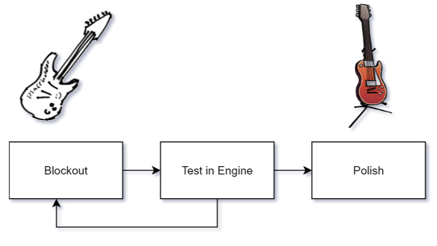
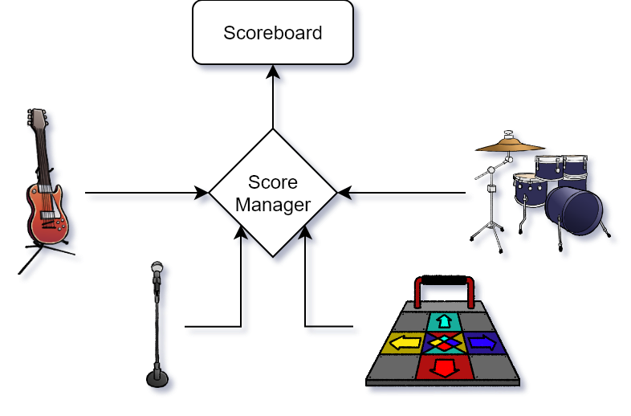

It’s five minutes to curtain call, but the band
still hasn’t shown up. Stage Fright is a rhythm
action game made by two artists, a sound designer,
and a programmer.
Asset pipelines
With a team made primarily of artists, clear
production guidelines were essential. All assets
went through a three-stage pipeline before being
incorperated into the game.
First, a blockout tested size, orientation,
proportion, and animation keyframes. That
blockout was added to the engine for quick
feedback before artists committed to a final
asset. This process kept iteration fast and
feedback frequent across visual and audio
assets.

Production pipeline used on Stage Fright.
Score system
A global score manager is responsible for tracking
the player's points. Ay object reading or modifying
score must communicate its intent to the manager,
keeping the interface centralized and easy to extend
with new mechanics.
The manager automatically calculates and applies
the player’s multiplier to any incoming score.
As a result, instruments can modify score without
needing to account for external factors, while the
scoreboard can read the most up-to-date score from a
single location.

Objects access the player’s score through the
score manager.